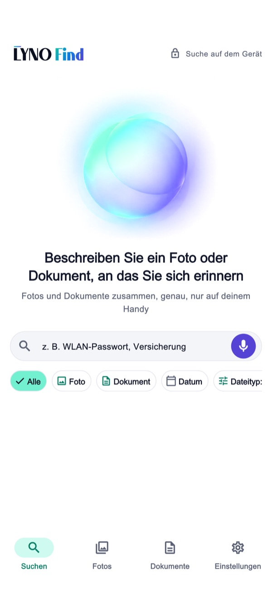

LYNO Find voll nutzen
LYNO Find findet die Fotos und Dokumente auf deinem Telefon mit Wörtern: was ein Foto zeigt, den Text darin und den Inhalt von Dokumenten. Alles wird nur auf deinem Telefon analysiert und durchsucht. Diese Anleitung folgt der Anleitung in der App, mit echten App-Bildschirmen.
